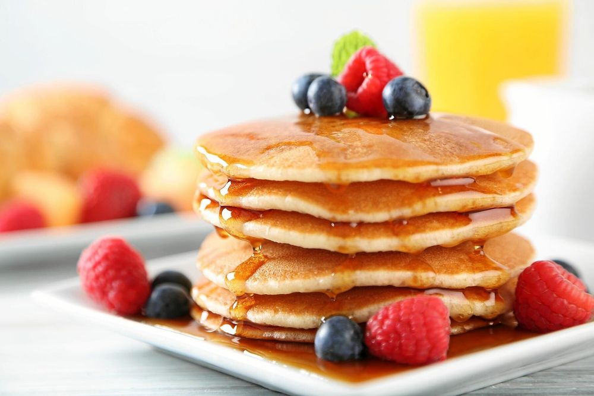
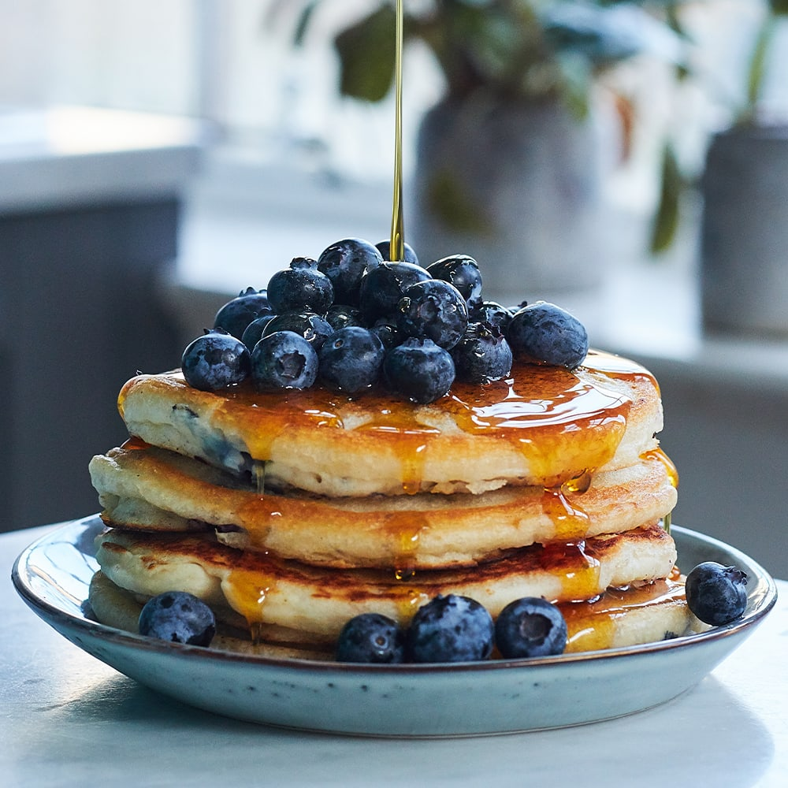

Easy recipe for American pancakes
Instructions
- Mix together flour, baking powder, and salt in a bowl.
- Slowly pour in half of the milk while whisking until it's a smooth batter.
- Whisk in the rest of the milk and the eggs.
- Let the batter rest for 10 minutes.
- Fry the pancakes in a little bit of butter in a pan.
- Serve pancakes with maple syrup, berries or fruit.
Serving suggestions

